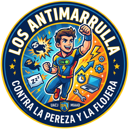
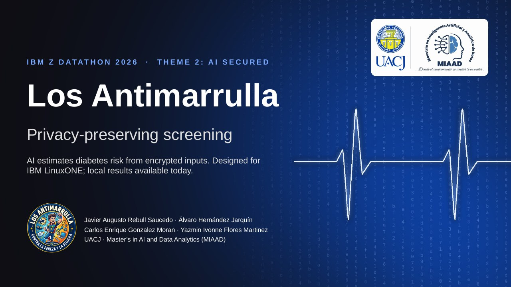

IA que detecta riesgo de diabetes sin ver a ningún paciente: el cálculo ocurre sobre datos cifrados, diseñado para IBM LinuxONE (hoy probado en contenedores locales; la ejecución en LinuxONE está pendiente de evidencia). Más un pronóstico a 52 semanas para planear el presupuesto por estado y sexo.
El servicio de riesgo recibe únicamente cifrados y nunca tiene la llave. En la demo, el entorno del hospital y el servicio corren en la misma máquina (en LinuxONE, la misma VM): quien la administra queda dentro del entorno de confianza, y por eso usamos solo pacientes sintéticos.
8 slides: el problema, la solución, el cifrado homomórfico, la arquitectura en LinuxONE, la demo, los datos y el impacto.

La diabetes en México, de la detección a la muerte, con datos oficiales (SINAVE, DGIS, INEGI, SIS, CONAPO).
7 épicas y sus historias de usuario, con responsable, horario y estado. El estado se lee en vivo desde nuestro repositorio en GitHub.
UACJ · Maestría en Inteligencia Artificial y Analítica de Datos (MIAAD) · Combatimos la flojera y la procrastinación.